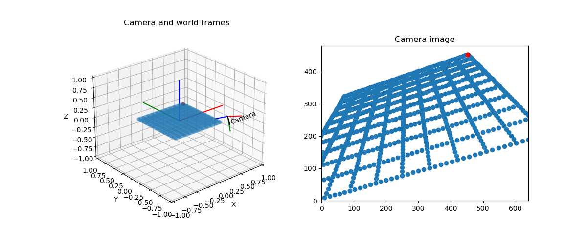

Note
Click here to download the full example code
Camera Transform¶
We can see the camera frame and the world frame. There is a grid of points from which we know the world coordinates. If we know the location and orientation of the camera in the world, we can easily compute the location of the points on the image.
print(__doc__)
import numpy as np
import matplotlib.pyplot as plt
from mpl_toolkits.mplot3d import proj3d
from pytransform3d.rotations import active_matrix_from_intrinsic_euler_xyz
from pytransform3d.transformations import transform_from, plot_transform
from pytransform3d.camera import make_world_grid, world2image
cam2world = transform_from(
active_matrix_from_intrinsic_euler_xyz([-np.pi + 1, -0.1, 0.3]),
[0.2, -1, 0.5])
focal_length = 0.0036
sensor_size = (0.00367, 0.00274)
image_size = (640, 480)
world_grid = make_world_grid()
image_grid = world2image(world_grid, cam2world, sensor_size, image_size,
focal_length)
plt.figure(figsize=(12, 5))
try:
ax = plt.subplot(121, projection="3d", aspect="equal")
except NotImplementedError:
# HACK: workaround for bug in new matplotlib versions (ca. 3.02):
# "It is not currently possible to manually set the aspect"
ax = plt.subplot(121, projection="3d")
ax.view_init(elev=30, azim=-70)
ax.set_xlim((-1, 1))
ax.set_ylim((-1, 1))
ax.set_zlim((-1, 1))
ax.set_xlabel("X")
ax.set_ylabel("Y")
ax.set_zlabel("Z")
plot_transform(ax)
plot_transform(ax, A2B=cam2world, s=0.3, name="Camera")
ax.set_title("Camera and world frames")
ax.scatter(world_grid[:, 0], world_grid[:, 1], world_grid[:, 2], alpha=0.2)
ax.scatter(world_grid[-1, 0], world_grid[-1, 1], world_grid[-1, 2], color="r")
ax.view_init(elev=25, azim=-130)
ax = plt.subplot(122, aspect="equal")
ax.set_title("Camera image")
ax.set_xlim(0, image_size[0])
ax.set_ylim(0, image_size[1])
ax.scatter(image_grid[:, 0], -(image_grid[:, 1] - image_size[1]))
ax.scatter(image_grid[-1, 0], -(image_grid[-1, 1] - image_size[1]), color="r")
plt.show()
Total running time of the script: ( 0 minutes 0.218 seconds)